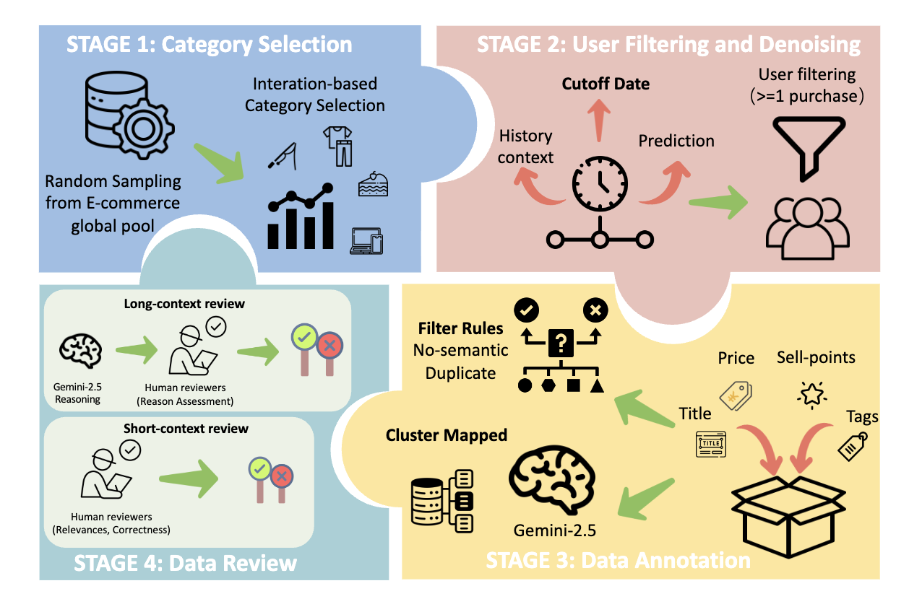
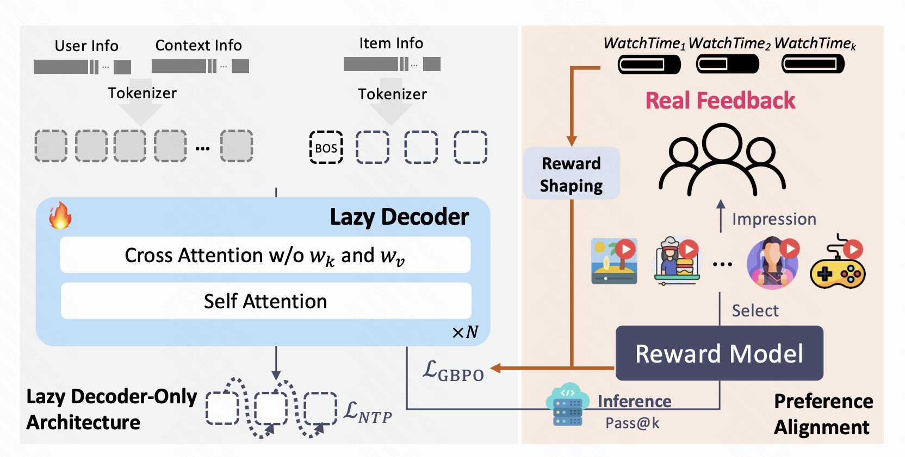
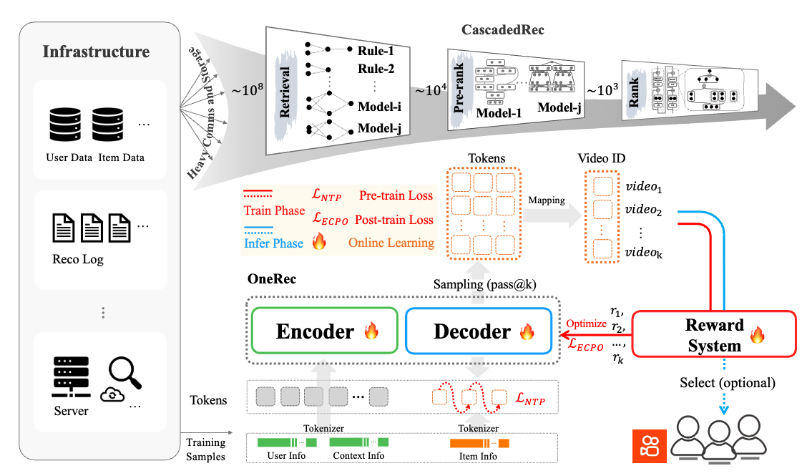
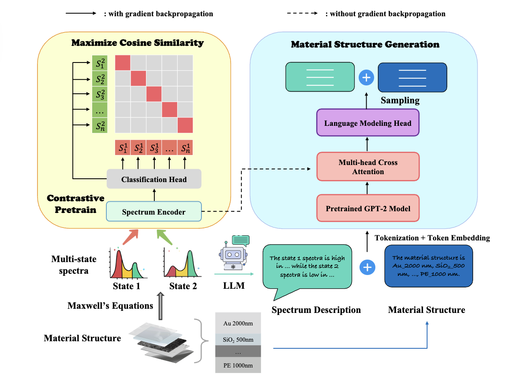
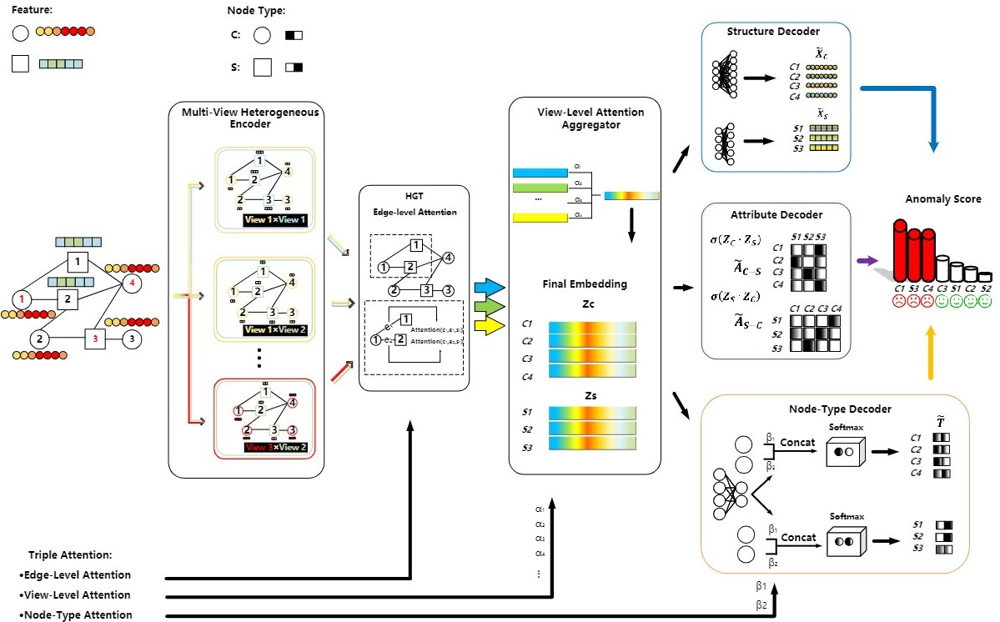
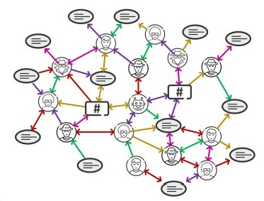

- [2026.03] I will join Tencent (WXG WeChat Channel) full-time to research LLM and Agent!🎉
- [2026.02] ALPBench: A Benchmark for Attribution-level Long-term Personal Behavior Understanding is on arXiv!
- [2025.11] CoSP: Reconfigurable Multi-State Metamaterial Inverse Design via Contrastive Pretrained LLM is on arXiv!
- [2025.08] OneRec-V2 Technical Report is on release!🔥🔥🔥
- [2025.06] OneRec Technical Report is on release!🔥🔥🔥
- [2025.05] I will join Kuaishou Recommendation LLM Group (OneRec) as a research intern.
- [2024.11] I will join Xiaohongshu AIGC Group as a research intern.
- [2023.07] I graduated from XJTU.
- [2023.06] AHEAD was accepted to CIAC 2023.
- [2023.03] I will join Tsinghua University to work with Prof. Kaichen Dong and Prof. Yansong Tang this fall.
My primary research interest lies at Large Language Models, Generative Recommendation, Agentic Reinforcement Learning.

We introduce ALPBench, a benchmark for attribution-level long-term personal behavior understanding. Unlike item-focused benchmarks, ALPBench predicts user-interested attribute combinations, enabling ground-truth evaluation even for newly introduced items.

We propose OneRec-V2 with Lazy Decoder-Only Architecture that eliminates encoder bottlenecks and incorporates real-world user feedback for better preference alignment.

We propose OneRec, which reshapes the recommendation system through an end-to-end generative approach and achieves promising results. Firstly, we have enhanced the computational FLOPs of the current recommendation model by 10 × and have identified the scaling laws for recommendations within certain boundaries.

We propose CoSP, an intelligent inverse design method based on contrastive pretrained LLM for reconfigurable multi-state metamaterials.


We propose AHEAD: a heterogeneity-aware unsupervised graph anomaly detection approach based on the encoder-decoder framework.

We present TwiBot-22, the largest graph-based Twitter bot detection benchmark to date, which provides diversified entities and relations in Twittersphere and has considerably better annotation quality.
2023.08 - present
M.S. in Data Science and Information Technology
Advisor: Prof. Kaichen Dong
Co-supervised by Prof. Yansong Tang

2019.08 - 2023.07
B.E. in Information and Computational Science
Advisor: Prof. Minnan Luo
Full-time (LLM & Agent for Recommendation) 2026.03 - present
Research LLMs and Agent for live streaming recommendation in WeChat Channel.
Research Intern (Recommendation LLMs) 2025.6 - 2026.3
Worked on applying large language models to recommendation scenarios, focusing on RLHF of generative recommendation LLM (OneRec).
Mentor: Qigen Hu
Research Intern 2024.11 - 2025.3
Worked on improving the performance of text2image generation models like Stable Diffusion and Flux.
Mentor: Shuang Sun
Visiting Student 2023.02 - 2023.5
Worked on anomaly detection on industrial images.
Mentor: Jinbao Wang
Advisor: Prof. Feng Zheng
Member 2022.10 - present
Conducted research on various topics including social network analysis and heterogeneous graph anomaly detection.
Advisor: Prof. Minnan Luo
- I have the fortune to work with brilliant mentors, collaborators, and advisors during my undergraduate and I am truly grateful for their guidance and help. If you feel like I can be of some help to your research career, welcome to reach out!☕
- My Chinese name is 杨舒杰 (Yang, Shujie).
- I enjoy jogging🏃 and playing badminton🏸️.
- I'm a huge fan of Stephen Curry🏀，film series Jhon Wick🕶️， cartoon series Jujutsu Kaisen and Chainsaw Man.
- I love playing Splatoon 3 and Valorant.